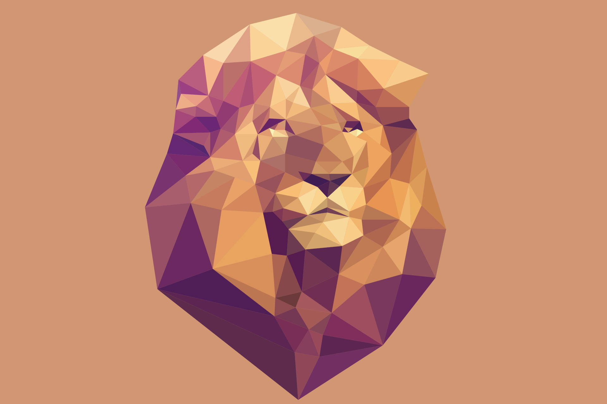
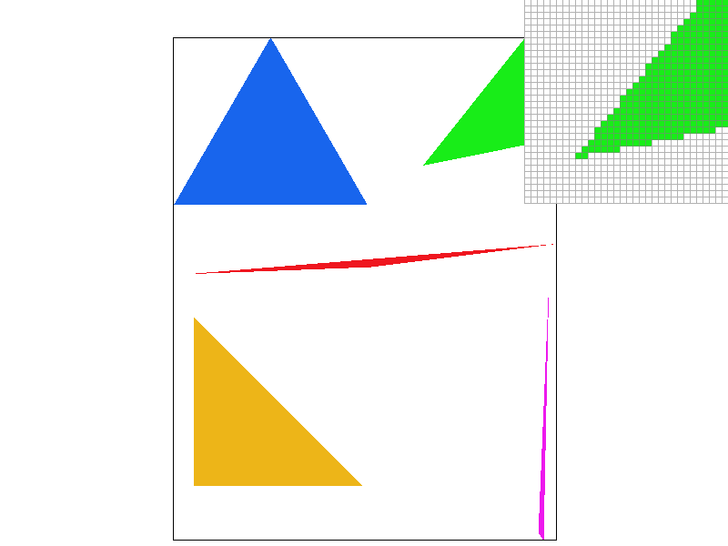
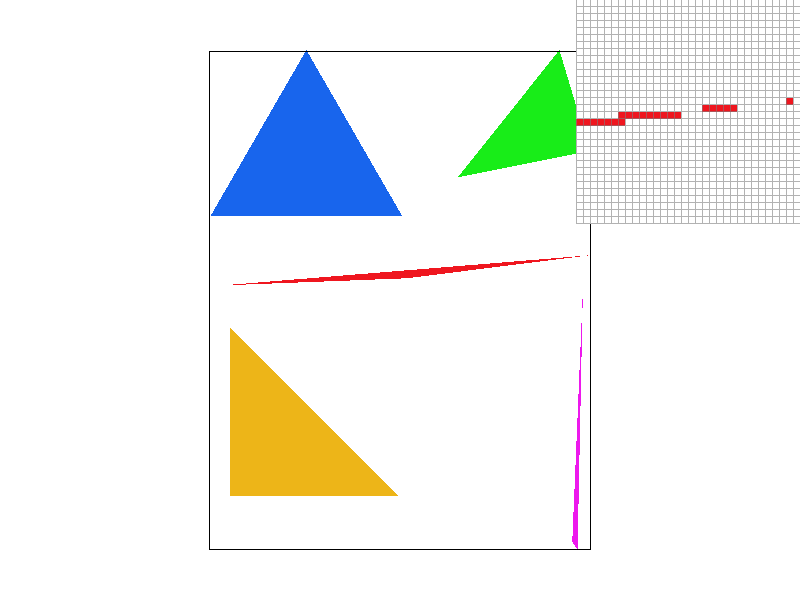
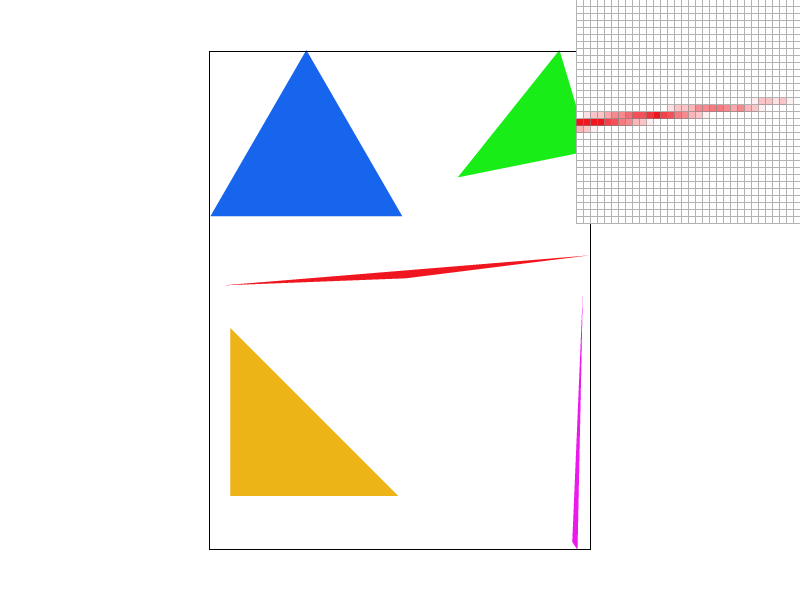
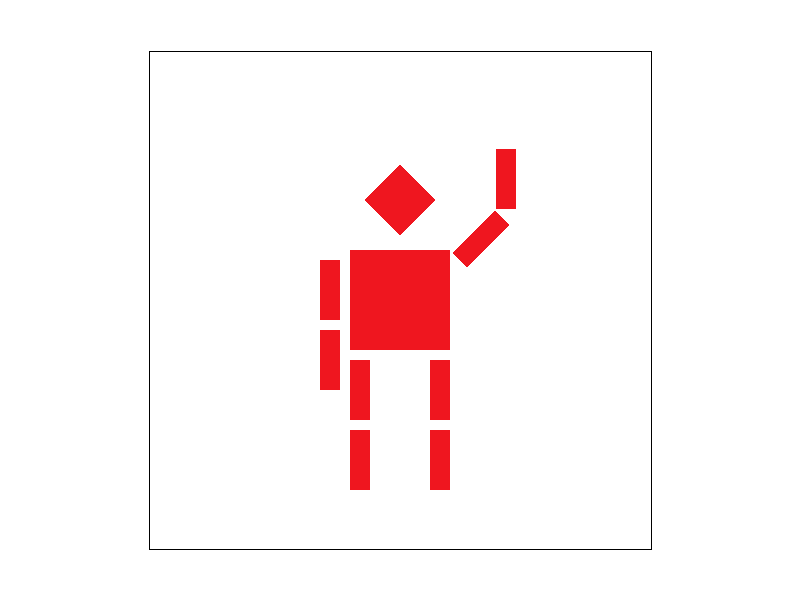
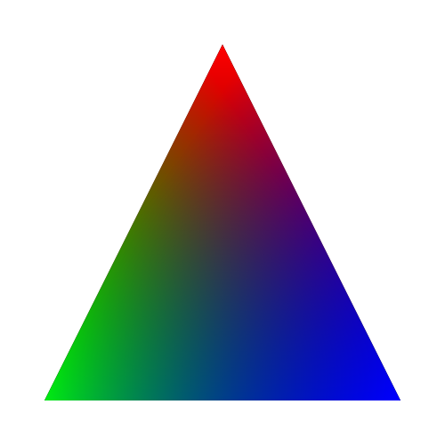
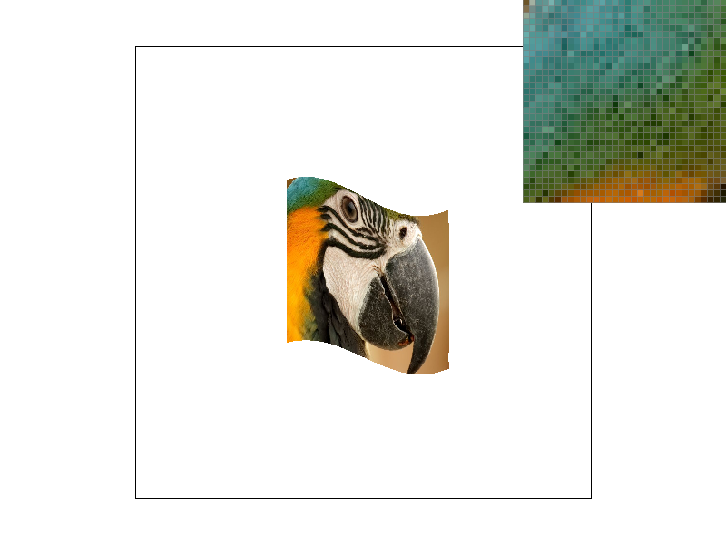
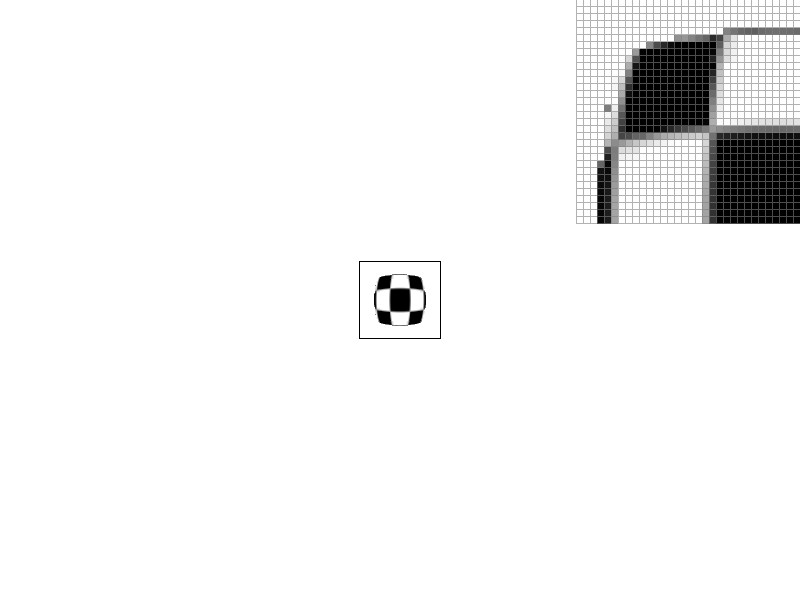

CS184/284A Fall 2026 Homework 1 Write-Up
Jason Wang
Link to webpage: https://cal-cs184-student.github.io/hw1-jw-writeup/
Link to GitHub repository: https://github.com/cal-cs184-student/hw1-jw-writeup.git

Overview
Give a high-level overview of what you implemented in this homework. Think about what you've built as a whole. Share your thoughts on what interesting things you've learned from completing the homework.Task 1: Drawing Single-Color Triangles
Rasterizing a triangle begins by taking the three vertices of the triangle. Essentially, we want to determine which pixels lie inside of the triangle formed by this triangle. We form vectors, one from vertex to vertex (V0 to V1), and one from the vertex to the center of the pixel (V0 to (x + 0.5, y + 0.5)). By taking the cross product of these two vectors, we can determine which side of the vertex to vertex vector the pixel lies on. Repeating this same test for the other two vertices of the triangle (V1 to V2 and V2 to V0) gives us our three line test. If all three of those tests return same polarity numbers (positve for counter clock wise, negative for clock wise), the pixel lies within the triangle, and should be drawn.This algorithm is further improved by using the bounding box concept. Essentially, we limit the possible pixels to those within the bounding box of the triangle, a box that contains the max and min x and y coordinates of the triangle's vertices.

Task 2: Antialiasing by Supersampling
Super sampling works by increasing the amount of points that are sampled during the three line test. Instead of just the center of each pixel, super sampling tests more points in each pixel, like 4, 9, 16, etc... It evaluates the three line test for each of these points, and calculates the final gradient of the pixel color by the average number of points lying inside of the lines. This leads to a rather simple modification of the original rasterization pipeline. We add another set of for loops that handle each pixel and it's sampling.In the algorithm, it relies on using C++ dynamic arrays to hold the increased data size of our sampling. This serves two purposes: allowing the array to be resized for our changing sample rate (4, 9, 16), as well as serving as a temporary memory buffer before sending the final color to the actual computer screen. This also serves a secondary purpose of saving our data. If two images were sharing an edge, the memory buffer allows us to send the colors of the shapes to the memory buffer before doing the final averaging, preventing us from either losing data or screen tearing.


As we increase the sample rate, pixels get filled in with gradients and triangles look smoother
Task 3: Transforms

Task 4: Barycentric coordinates
Berycentric coordinates are a unique coordinate system that plots a point relative to the vertices of a shape, rather than a set origin. In our case, if we use a triangle for example, we'd have a three value cooridnate point that would basically represent the weight of each vertex. The higher each value, the closer that pixel is to a vertex. Due to the cross product math, we can actually use this for three line testing byt simply evaluating if those three weights are all positive. Additionally, we can apply these weights to color gradients, especially if we have a shape where each vertex represents a color. This technique can result in smooth gradients like in the image below.

Task 5: "Pixel sampling" for texture mapping
Pixel sampling is where you take data from a premade texture, and overlay it onto the new polygon. Typically, something like a new (U, V) 0 to 1 coordinate system is used, where each vertex of a triangle is assigned a coordinate inside of that box. Then, we can repeaat the barycentric concept, but instead of making the pixels weighted to colors, they are weighted to the (U, V) coordinate. Then, you can simply assign this relative cooridnate back to the original texture to fill its color.However, sometimes the math doesn't assign a pixel to a whole number in the texture coordinates. Therefore we use two different methods. We can use "Nearest Neighbour", where we simply round the texture coordinates and grab that texture color. We also have "Bilinear Interpolation", where we look at the closest textures surrounding that fractional coordinate. We then average out the nearest pixel colors, using weighted averages depending on how close the coordinate is to each color.

The difference between the two sampling methods become a lot more apparent when looking at a micro scale. For example, using a small texture on a large shape would cause lots of harsh, blocky lines with Nearest Neighbour, whereas Bilinear would smooth out those lines.
Task 6: "Level Sampling" with mipmaps for texture mapping
Level sampling is like an optimization technique, designed to handle images when zoomed out. Typically, trying to use pixel sampling for a zoomed out shape means one screen pixel could include hundreds or thousands of texture coordinate pixels. Averaging those is costly and rounding creates blocky, sharp edges. Therefore we create prerendered "levels" of our texture, each smaller than before, designed to be an averaged version of the previous level of textures. When the image zooms out, our sampling steps up a level accordingly to the new, smaller texture in order to avoid high memory usage.Lets consider the effectiveness of different options in pixel sampling, level sampling, and super sampling.
As seen previously, pixel sampling has Nearest and Bilinear. Nearest is the fastest but can cause blocky edges. Bilinear creates more smooth images, but requires some more math and interpolation calculations. Both of these struggle when dealing with zoomed out images.
Level sampling fixes the previous problems of zooming out. It also deals with Nearest and Bilinear, but in three combinations. Nearest for both pixels and levels, Bilinear for pixels and Nearest for levels, and Bilinear for both. The math scales the same, the more bilinear processes involved, the more math computations required. Additionally, to store the prerendered textures more memory of the computer is comsumed.
Supersampling has less to do with the technique of texture mapping and more of the original three line test math. Compared to the two texture sampling methods, supersampling requires quadratic amounts of math and memory to calculate math and store the results. However, this would be the best brute force solution, as it actively works on the actual edge of the shape rather than just smoothing out the texture overlaid onto the shape.
